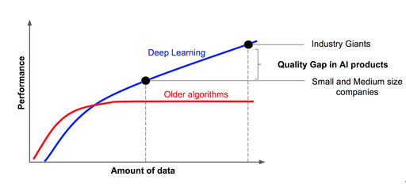

Big Data For Data Science
Module 5: Data Analysis for Big-data
Xingang (Ian) Fang
Outline
Products of data analysis
Machine learning overview
Machine learning models
Deep learning models
Products of data analysis
Reports and visualizations
Models
Statistical
Machine learning (including deep learning)
Optimized process/algorithm
New datasets
Data Analysis in Big Data Context
Two scenarios
Start big (data), finish small (report, visualization, small model)
Start big (data), finish big (dataset, large model)
Statistical models
find trends and metrics
cannot model complex patterns
Machine learning: a subset of artificial intelligence that allows computers to learn from data and make predictions or decisions without being explicitly programmed.
Deep learning models (large model)
Most models are not “big”
Credit: Andrew Ng, CC BY-SA 4.0 <https://creativecommons.org/licenses/by-sa/4.0>, via Wikimedia Commons
Deep Learning
Learn non-linear patterns
Large number of parameters
Require large volume of data to perform well
Drawbacks
Extremely expensive and slow to train
Overfitting

Credit: BrunelloN, CC BY-SA 4.0 <https://creativecommons.org/licenses/by-sa/4.0>, via Wikimedia Commons